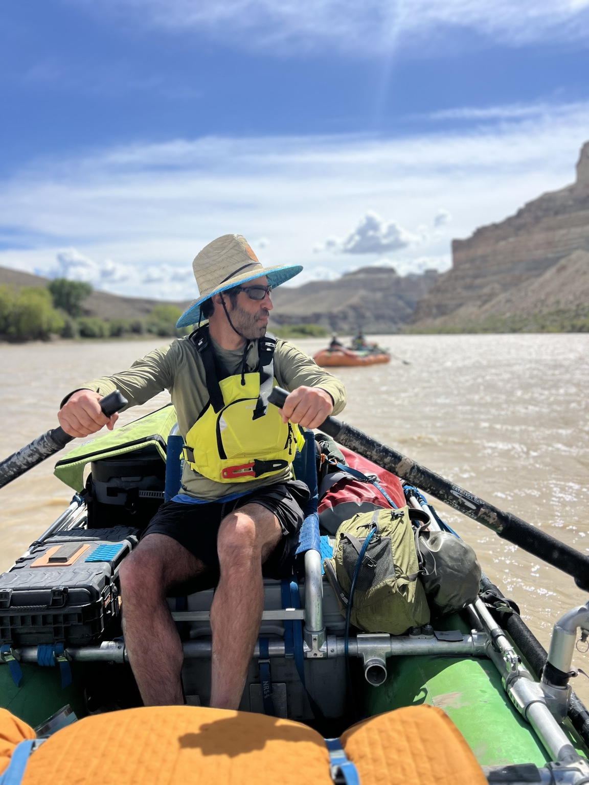

Our approach / The conditions
Class IV™
A lens for leading in consequential conditions.
Conditions, not a destination
When the conditions change,
capability has to change too.
Borrowing from the way rivers are classified, Class IV is Ascentric’s lens for reading organizational conditions, from familiar and relatively stable to highly uncertain, interdependent, and consequential.
It can show up in a boardroom, during an acquisition, through AI disruption, or between founders working through a transition. The setting is less important than what the situation demands of people.
The same framework can inform consulting, leadership-team work, executive development, coaching, facilitation, and selected experiential programs.
The Class I–V lens
A way to read the conditions.
Not a score for your team.
Class IV is not a maturity score. Class IV is not “better” than Class II. The conditions can become more difficult without the organization becoming more capable.
- I Familiar
- Stable conditions. Known patterns. Established ways of working generally fit.
- II Changing
- More moving parts, with enough predictability to adapt familiar practices.
- III Complex
- More uncertainty and interdependence. Roles, communication, and decisions are tested.
- IV Consequential
- Multiple variables move together. The stakes matter. The organization needs stronger ways to communicate, decide, and coordinate.
- V Crisis
- Severe disruption and high consequence. Stabilization and specialist crisis support may take priority.
The useful question
Do our ways of working
fit what the situation demands?
An organization may face Class IV conditions with communication, role clarity, decision systems, and trust built for something much simpler.
Map the human system- Growth
- New technology
- New strategy
- Leadership transition
- Greater interdependence & consequence
- Roles
- Trust
- Decisions
- Communication
- Norms
- Leadership practices
Put the lens to work
Read what changed.
Build what’s needed.
- What has changed in the conditions?
- Which familiar habits no longer help?
- Where do communication, trust, roles, or decisions break down?
- What does the team need to practice differently?

One way to practice
The goal is not calmer water. The goal is a team capable of navigating harder water together.
Class IV™ in the field
Selected offsites, river programs, and wilderness experiences can make patterns visible and give teams a place to practice together.
Ascentric designs the curriculum, leadership development, facilitation, integration, and coaching. Appropriate professional partners provide outfitting, logistics, and safety for outdoor programs.
Explore experiential programsLet’s talk
Have the conditions changed faster than the way the team works?
Let’s look at what the situation now demands and what the team needs to develop.